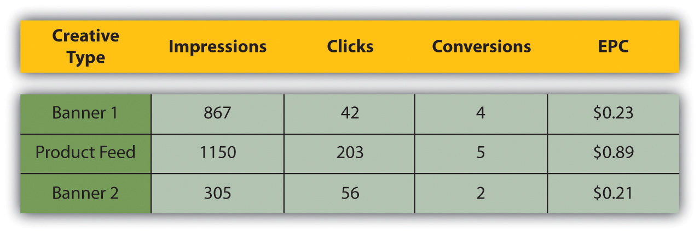

The key to affiliate marketing is being able to track the whole process, from potential customers being sent to a Web site to completed action, so that the merchant is able to award the correct affiliate with the correct commission. This really is the crux of affiliate marketing.
Specialized affiliate tracking software is used to track affiliate campaigns, and this is usually supplied and supported by the affiliate network. Often, the merchant and the affiliate will also use their own tracking software to make sure that there are no major discrepancies.
Affiliates send traffic to merchants through links or uniform resource locators (URLs)A unique address that identifies a Web site., and the tracking software allows each affiliate to have a unique identifier in the URL. These links set a cookieParcels of text sent by a server to a Web browser and then sent back unchanged by the browser each time it accesses that server. Cookies are used for authenticating, tracking, and maintaining specific information about users, such as site preferences or the contents of their electronic shopping carts. on the customer’s computer, which allows the software to track the sale.
For example, here is the URL of a product on a retailer’s Web site:
http://www.firebox.com/product/1201
Here is the URL for the same product with affiliate tracking:
http://scripts.affiliatefuture.com/AFClick.asp?affiliateID=238&merchantID= 214&programID=3897&mediaID=0&tracking=cube_world&url=http://www.firebox.com/index.html?dir=firebox&action=product&pid=1201
You can see some of the information being recorded. It has been shown in bold in the URL and includes the following:
Can you spot the original URL in the tracking URL??
Do you want to see what cookies have been set on your browser? If you use Mozilla Firefox, go to Tools > Options > Privacy, and click on “Show Cookies.” You can see all the domains for which cookies have been set, and you can see when the cookie will expire. You can delete cookies if you want to. For Internet Explorer, go to Tools > Internet Options > General, and click on “Settings” under “Temporary Internet Files.” Click on “View Files” to see cookies set and other temporary Internet files.
When the customer completes the required action on the merchant’s Web site, the cookie will allow the tracking software to collect the information needed to award the commission. For example, if a customer were to use an affiliate link to purchase a gift from a merchant (using the same URL as before as an example), the following information would be collected:
All this information will allow the merchant to confirm that the sale is valid, as well as the amount of commission that is due, without ever releasing any of the customer’s personal information.
Affiliate tracking software collects information even if no action is completed. This is vital to the affiliates and to the merchants to see where they can optimize their campaign.
Information collected includes the following:
All this information helps to build up data in order to strengthen the campaign.
Figure 4.3 Table Showing Data Used to Determine the Success of an Affiliate Campaign
What data would need to be collected? Does this differ for different types of affiliate marketing? Think of e-mail marketing versus PPC (pay per click), for example.
Affiliates will use this information to determine the success of their marketing efforts. Remember that affiliates invest money into marketing various merchants, and they only get rewarded on commission. An affiliate will use the above information to determine whether or not to promote a merchant and how much they should invest in promoting a particular merchant.
Merchants can use the information on their campaign to determine how best to optimize. For example, if a particular type of banner seems to do better than others, they could use that to improve other banners that they offer.
If you follow the steps mentioned above to see what cookies have been set on your browser, you’ll notice that there are a lot of different expiration periods for cookies. Cookies are not just used for affiliate marketing. They are also used to store information so that a Web site “remembers” who you are next time you visit it. The domain owner gets to determine the length of time a cookie should last. This is called the cookie periodThe length of time a cookie should last, often set by the merchant..
When it comes to affiliate marketing, it is up to the merchant to decide what the cookie period should be. The affiliate is only awarded commission should the desired action take place within the cookie period. Some merchants make the cookie last for the sessionThe session of activity that a user with a unique cookie spends on a Web site during a specified period of time only (i.e., if the user only makes purchases the following day, no commission is rewarded), whereas the standard cookie period for affiliate marketing is thirty to sixty days. Some merchants offer 999-day cookies, or even lifetime cookies.
There are merchants who offer what is called an affiliate lock-inThe first affiliate to refer the customer earns commission on the lifetime of the customer. Every purchase that the customer makes will earn the affiliate commission.. Here, the first affiliate to refer the customer earns commission for as long as the customer remains a customer; every purchase that the customer makes will earn the affiliate commission.
Do you think there is an advantage to a 999-day cookie? What is the difference between a 999-day cookie and a lock-in?
Affiliates tend to prefer a longer cookie period it increases the likelihood of being awarded commission.